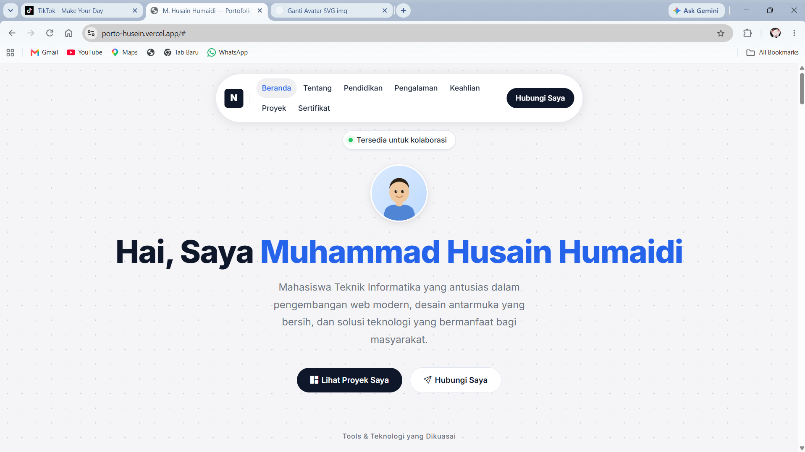

Website Portofolio Pribadi
Website portofolio responsif yang dibuat menggunakan HTML5, CSS3, dan Bootstrap 5. Menampilkan informasi pribadi, riwayat pendidikan, pengalaman, keahlian, dan proyek dengan desain bersih dan modern mengacu pada prinsip UI/UX yang baik.